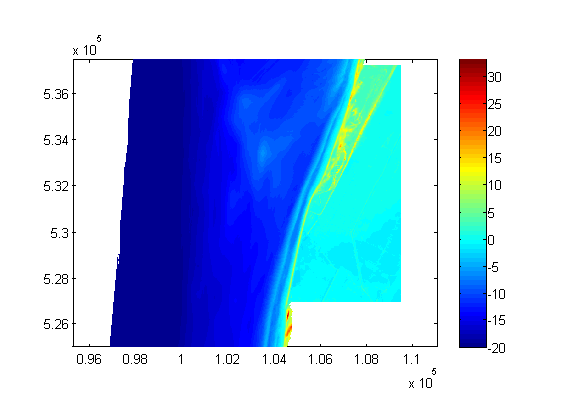

The default model
Setting up an XBeach model with the XBeach Toolbox mainly concerns calling the xb_generate_model function:
xbm = xb_generate_model;
The variable xbm now contains an XBeach model setup. Such model setup is basically a representation of the params.txt file that is ultimately generated to be able to run the model (see the XBeach website for more information on how the XBeach model works). Moreover, all files referred to in the params.txt file, like bathymetries and surge files, are included in the model setup.
Since no parameters are supplied to the xb_generate_model function, the model setup consists of default settings only: bathymetry, calculation grid, hydraulic boundary conditions, model settings, etcetera.
The varabile xbm is an XBeach structure. See the XBeach structure tutorial for more information
Customizing your model
Since the default model is hardly ever sufficient, the xb_generate_model function offers possibilities to directly customize your model. Customization of a model is structured to the four main components of an XBeach model:
- Bathymetry and grid
- Water levels and storm surge
- Wave spectra and grid
- Model settings
For example, a JARKUS transect can be used instead of the default cross-section:
% obtain JARKUS transect from OpenDAP server j = jarkus_transects('id', 7001483, 'year', 2008); % remove nan's from transect j = jarkus_interpolatenans(j); x = squeeze(j.cross_shore(~isnan(j.altitude))); z = squeeze(j.altitude(~isnan(j.altitude))); % plot bathymetry obtained from JARKUS datasource plot(x, z); % generate model setup using JARKUS bathymetry xbm = xb_generate_model('bathy', {'x', x, 'z', z});
The code above uses the bathymetry to generate an optimal calculation grid based on the Courant number. This implies that the water level and waves imposed on the model are used in this routine as well. Both parameters are still set to the defaults. Modifying the surge and waves can be done in a similar manner:
% obtain the normative strom surge and wave conditions for the obtained % JARKUS transect [h Hs Tp] = bc_normstorm('loc', [j.x(end), j.y(end)], 'freq', 1e-4); % generate a surge hydrograph conform Vellinga (1986) from the normative % conditions [t h duration Hs Tp] = bc_stormsurge('h_max', h, 'Hm0_max', Hs, 'Tp_max', Tp, 'nwaves',32); % plot hydraulic conditions plot(t, h, '-r', cumsum(duration), Hs, '-g', cumsum(duration), Tp, '-b'); % generate model setup using JARKUS bathymetry and obtained surge and wave % confitions xbm = xb_generate_model( ... 'bathy', {'x', x, 'z', z}, ... 'tide', {'time' t, 'front', h, 'back', 0}, ... 'waves', {'Hm0', Hs, 'Tp', Tp, 'duration', duration}, ... 'settings', {'tstop', 1800, 'tint', 600} ... );
In the latter xb_generate_model call also some additional model settings are modified from the defaults (tstop and tint). These parameters are set directly in the params.txt file ultimately generated.
Going 2D with your model
Until now, model generation has been 1D, having a bathymetry specifying only the x and z coordinates. Going 2D with your model can be done by just specifying y coordinates as well:
% obtain Vaklodingen data from OpenDAP server url = 'http://opendap.deltares.nl/thredds/dodsC/opendap/rijkswaterstaat/vaklodingen/vaklodingenKB121_2524.nc'; x = nc_varget(url, 'x'); y = nc_varget(url, 'y'); z = nc_varget(url, 'z'); z = squeeze(z(end,:,:)); % plot bathymetry obtained from Vaklodingen datasource pcolor(x, y, z); shading flat; axis equal; colorbar; % generate model setup using Vaklodingen bathymetry xbm = xb_generate_model( ... 'bathy', {'x', x, 'y', y, 'z', z ... 'crop', [100110 530440 7333 5817], ... 'finalise', {'lateral_sandwalls' 'lateral_extend' 'seaward_flatten'} ... } ... );
The call to the xb_generate_model function contains next to the y coordinates two other settings that influence the calculation grid used: crop and finalise. By default, the original bathymetry is rotated such that the coastline is oriented in y direction to minimze the calculation grid. This means that the gird used looks as follows:
% determine grid origin xori = min(min(x)); yori = min(min(y)); % determine rotation of grid and correct alpha = xb_grid_rotation(x, y, z); [xr yr] = xb_grid_rotate(x, y, -alpha, 'origin', [xori yori]); % plot rotated grid pcolor(xr, yr, z); shading flat; axis equal; colorbar;
In order to obtain a rectangular grid again, the rotated grid is cropped. An automated cropping routine is used by default, which might not result in the desired grid. Therefore, a cropping vector can be supplied containing the x and y coordinates of the lower left corner and the width and height of the desired grid. Using the cropping vector defined above, the final grid looks as follows:
% extract the bathymetry from the XBeach model structure xbb = xb_input2bathy(xbm); [xf yf zf] = xb_get(xbb, 'xfile', 'yfile', 'depfile'); % plot final grid pcolor(xf, yf, zf); shading flat; axis equal; colorbar;
The final grid contains some other improvements which are introduced by the finalise option. The finalise option is a cell array with strings specifying grid finalisation actions. In the latter figure you can see the sandwalls created by the lateral_sandwalls option along the lower border of the grid at land. At the seaward border you can see a horizontal strip running in y direction generated by the seaward_flatten function. Finally, the grid is made uniform at both lateral borders using the lateral_extend option.
Using multiple datasources
We already used different datasources for the bathymetry (JARKUS and Vaklodingen), but not in a single model. This example shows how different bathymetries can de combined in a single bathymetry for your model.
Furthermore, this example shows how to include non-erosable layers and a convenient way to obtain normative storm conditions when exact coordinates are unknown or less important.
% obtain ArcGIS data from AHN25 [x1 y1 z1 info] = arc_asc_read('P:\1002266-xbeach\XBeachToolbox\data\petten\ahn25_petten.asc', 'zscale', 1); % obtain ArcGIS data from AHN5 (higher resolution, smaller area) [x2 y2 z2 info] = arc_asc_read('P:\1002266-xbeach\XBeachToolbox\data\petten\ahn5_petten.asc', 'zscale', 100); % obtain preprocessed Vaklodingen data S = load('P:\1002266-xbeach\XBeachToolbox\data\petten\vaklodingen_petten.mat'); x3 = S.x; y3 = S.y; z3 = S.z; % merge the three bathymetries in order [x y z] = xb_grid_merge('x', {x1 x2 x3}, 'y', {y1 y2 y3}, 'z', {z1 z2 z3}); % obtain ArcGIS data from AHN25 containing the non-erodable layers % (seawall) and interpolate on merged grid [x4 y4 z4 info] = arc_asc_read('P:\1002266-xbeach\XBeachToolbox\data\petten\ahn25_seawall.asc', 'zscale', 1); ne = ~isnan(xb_grid_interpolate(x4, y4, z4, x, y)); % plot the merged bathymetry pcolor(x, y, z); shading flat; axis equal; colorbar; snapnow; % obtain the normative strom surge and wave conditions by just calling the % name of the location modeled. The name is translated to coordinates using % Google Maps. [h Hs Tp] = bc_normstorm('loc', 'Petten', 'freq', 1e-5); % generate a surge hydrograph conform Vellinga (1986) from the normative % conditions [t h duration Hs Tp] = bc_stormsurge('h_max', h, 'Hm0_max', Hs, 'Tp_max', Tp, 'nwaves', 32); % plot hydraulic conditions plot(t, h, '-r', cumsum(duration), Hs, '-g', cumsum(duration), Tp, '-b'); snapnow; % generate the model for Petten xbm = xb_generate_model( ... 'bathy', {'x', x, 'y', y, 'z', z, 'ne', ne, ... 'crop', [99000 532000 7500 6000], ... 'finalise', {'landward_polder' 'lateral_sandwalls' 'lateral_extend' 'seaward_flatten'}}, ... 'tide', {'time' t, 'front', h, 'back', 0}, ... 'waves', {'Hm0', Hs, 'Tp', Tp, 'duration', duration}, ... 'settings', {'tstop', 1800, 'tint', 600} ... ); % plot the final rotated, cropped and finalised bathymetry xbb = xb_input2bathy(xbm); [xf yf zf nef] = xb_get(xbb, 'xfile', 'yfile', 'depfile', 'ne_layer'); pcolor(xf, yf, zf); shading flat; axis equal; colorbar; snapnow; pcolor(xf, yf, nef); shading flat; axis equal; colorbar;
Reading an existing model
We showed how to setup a model from scratch with the XBeach Toolbox. However, existing models stored on disk can also be used in the Toolbox. The collection of files, including params.txt and all files referred to from there, can be converted to an XBeach model structure as follows:
% write a dummy model to disk xb_write_input('params.txt', xb_generate_model); % read it from disk into an XBeach structure xbm = xb_read_input('params.txt');